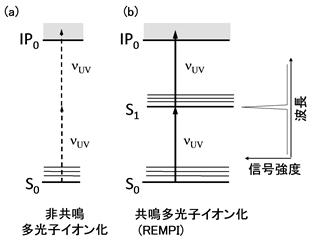

Ionization of molecules by photoexcitation-resonance multiphoton ionization
In photoexcitation, the energy of photon, hν, is directly given to the molecule. Therefore, photoionization, which is a type of photoexcitation, can control the energy given to ions with extreme precision. This makes it possible to suppress fragmentation associated with ionization. This is because ions ionized by methods other than photoexcitation have excess energy and it is believed that this excess energy causes dissociation reaction (fragmentation). In photoionization, ionization at the ionization potential is possible by using a tunable laser and a light source with variable wavelength and monochromaticity such as orbital radiation, enabling the excess energy to be zero. From this, it can be said that photoionization has the potential to become the ultimate soft ionization method which does not dissociate molecules at all.
A laser is a high brightness light source with excellent monochromaticity, and it can cause a nonlinear optical process which is difficult with other light sources. Multiphoton absorption, multiphoton ionization where one molecule absorbs multiple photons at a time is a typical one. Why is multiphoton absorption easily realized by a laser light source? This is easy to understand if light absorption is considered as collision between molecules and photons. The light from a normal light source such as a lamp has a low density, and the density of the sample molecule is much higher than that of the sample molecule. Therefore, since only one photon collides with one molecule at a time, only one photon is involved in light absorption. On the other hand, since laser light has high luminance and high photon density, several photons can collide with one molecule at the same time, so that multiphoton absorption difficult to induce with a normal light source can be easily generated.
Principle of multiphoton ionization spectroscopy
Laser is a high brightness light source excellent in monochromaticity and can cause a nonlinear optical process difficult with other light sources. Multiphoton absorption, multiphoton ionization, where one molecule absorbs more than one photon at a time is a typical one. Why is multiphoton absorption realized easily with a laser light source? This can be easily understood by considering light absorption as a collision between molecules and photons. The light from ordinary light sources such as lamps has low density and the density of sample molecules is much higher than that of sample molecules. Therefore, only one photon can collide with one molecule at a time, and only one photon absorption occurs. On the other hand, laser light has high brightness and high photon density, and since multiple photons can collide simultaneously with one molecule, multiphoton absorption which is difficult to occur with ordinary light source can easily occur.
Figure 1 shows the principle of multiphoton ionization. When sufficiently powerful laser light is irradiated on the sample molecule, the sample molecule simultaneously ionizes two or more photons. Ionization (two-photon ionization) by two-photon absorption shown in the figure is the simplest case and it can be easily detected by irradiating laser light with energy higher than 1/2 of the ionization potential IP 0. For example, in the case of benzene, since the ionization potential is 9.25 eV ≈ 74600 cm-1(corresponding to ~ 134 nm light) , ultraviolet laser light with a shorter wavelength than 37300 cm -1= 268 nm which is more than half its energy is incident Two-photon ionization will then occur. This is a very handy feature with regard to the light source. Because benzene can not be ionized unless light of shorter wavelength than 134 nm is introduced in conventional one-photon ionization, ultraviolet light with a wavelength shorter than 200 nm can not transmit air, In the case of multiphoton ionization, it is possible to ionize with near-ultraviolet light which can be usually handled in the air, which makes it easy to handle the equipment and handling it.
The probability of multi-photon ionization W is expressed by the following equation. Here, μ is the dipole operator, e 1and e2are the electric field vectors of the first photon and the second photon of the incident laser, E S1-S0 is the energy difference between the electron excited state S 1and the ground state S 0of the sample molecule is. We sum up in the sense that we consider the contribution of all excited states.

The important point in this equation is that the energy difference between the electron excited state and the incident laser is the denominator. This indicates that when the wavelength of the laser resonates with the electron excited state, the ionization intensity increases markedly (Fig. 1b). This resonance effect is called resonant multiphoton ionization (REMPI), which is an extremely important feature of multiphoton ionization. By the way, this resonance effect is essentially the same as resonance effect in Raman scattering.
The first meaning of this resonance effect is that the ionization efficiency increases drastically by the resonance effect, so sensitivity can be greatly improved by choosing the proper ionization wavelength. Another significance is that by using the resonance effect a pronounced wavelength dependence appears for each sample molecule, it is possible to selectively ionize only a specific sample not only by the mass but also by the wavelength of the excitation light It is that. Thus, when the laser wavelength can be freely swept using a tunable laser, a spectrum equivalent to the so-called visible / ultraviolet absorption spectrum is obtained as an increase in multiphoton ionization (see Fig. 1). This point is a decisively different point from ordinary mass spectrometry, which enables two-dimensional analysis of mass and resonance wavelength. Of particular importance is the identification of isomers that are difficult to isolate and identify in conventional mass spectrometry. Even though the mass of the isomer molecule is the same, the energies of the electron excited state are different. Therefore, if the resonance wavelength is appropriately selected, it becomes possible to ionize only a specific isomer and detect it separately.
Experimental setup - supersonic jet multiphoton ionization
For multiphoton ionization, experiments combined with supersonic jet or supersonic molecular beam are common. A supersonic jet is simply a transient state obtained by adiabatic expansion of a sample gas from a small hole into a vacuum. Due to adiabatic expansion, the sample is cooled to a cryogenic temperature of several to several tens of K. Nevertheless, because the gas is expanded in a vacuum, the sample does not agglomerate as it is a gas. This is an ideal environment for spectroscopic analysis, which is a cryogenic isolated molecular state, and it is a method that brought revolutionary change to spectroscopy as well as the appearance of lasers.
Figure 2 shows the conceptual diagram of the spectroscopic vacuum chamber for generating supersonic molecular beams, which we made with application in analysis in mind. The equipment consists of supersonic molecular beam generating system and mass spectrometry / ion detection system. Sample gas is adiabatically expanded by being injected into the vacuum chamber through a pinhole nozzle with a diameter of about 100 μm from the opposite side to the detector. The cooled sample gas is ionized by irradiating the laser beam introduced through the quartz window on the side of the vacuum chamber. Here, when the sample gas stays in the vacuum chamber, collisions with ions occur and the generated ions are inactivated before reaching the detector. You have to exhaust the vacuum chamber with a pump with large displacement.
Ions generated by laser multiphoton ionization are generally quadrupole mass filter or time of flight mass spectrometry. Our equipment uses a time-of-flight mass spectrometer, and ions are sent from the ion lens to the drift tube and flying before being detected with an ion detector. Since the acceleration due to the electric field varies depending on the mass of the ions, you can determine the mass by the time it reaches the detector after laser irradiation. Since the relationship between this time-of-flight and mass varies with the ion lens to be used and its setting, it is necessary to calibrate properly using a standard sample (eg, benzene) suitable as a device function.
Illustration
As an actual analysis example, we will introduce real-time analysis of harmful organic compounds in automobile exhaust gas. Various harmful compounds generated by evaporating or burning fuel are mixed in the exhaust gas of automobiles. In order to analyze such a mixed gas by an analytical method such as gas chromatography mass spectrometry (GC - MS) which is widely used at the present time, it is necessary to collect the exhaust gas in a sample bag and separate and concentrate the compound was. Since we have to spend several hours to several days to do this work, we do not know how the components and concentrations of automobile exhaust gases are changing during actual operation. However, with our laser ionization method, it is possible to ionize and detect only a specific target molecule from among mixed gases by choosing an appropriate laser wavelength and observed mass number, so separation of compounds There is no need to do, and it is very sensitive, so concentration work is not necessary. Therefore, it is possible to observe changes in the components and concentrations of the mixed gas in real time.

実際にHere is an example of actually measuring the automobile exhaust gas in real time. The measured vehicle traveled on a diesel truck on a chassis dynamometer owned by a Collaborator's (German) Traffic Safety and Environment Laboratory (Fig. 3). The chassis dynamometer is a device that allows you to drive the vehicle on the spot without actually moving the vehicle by driving the vehicle on the roller under conditions close to actual driving. The vehicle was driven with a running pattern called JE 05 mode simulating running in the suburbs of the city with a running pattern used for vehicle inspection and the like. The exhaust gas was introduced directly from the tail pipe of the vehicle through the heating pipe into the laser ionization analyzer. The results of real-time measurement of phenol and benzene in the exhaust gas are shown in Fig. 4 (a) and (b). A graph of the running pattern is shown in Fig. 4 (c). It can be seen from the figure that the concentrations of phenol and benzene change according to the change in the running speed of the vehicle.
In this vehicle, the concentration of benzene changed from several 10 ppb to 1 ppm, resulting in a high concentration at idling and a low concentration at running. Also, it turned out that phenol was discharged only at high speed driving. Similar measurements were made for other vehicle types, and as a result, there was a trend towards a completely different concentration change from this vehicle. In this way, it is a great advantage of this laser ionization analyzer that it is possible to capture real-time concentration change and to catch the difference in emission tendency between car models.
Mass spectrometry using this laser ionization can be analyzed in addition to automobile exhaust gas as far as exhaust gases from incinerators and "gas" like tobacco. It is expected that it will continue to be applied not only to environmental field applications but also to medical field as well.